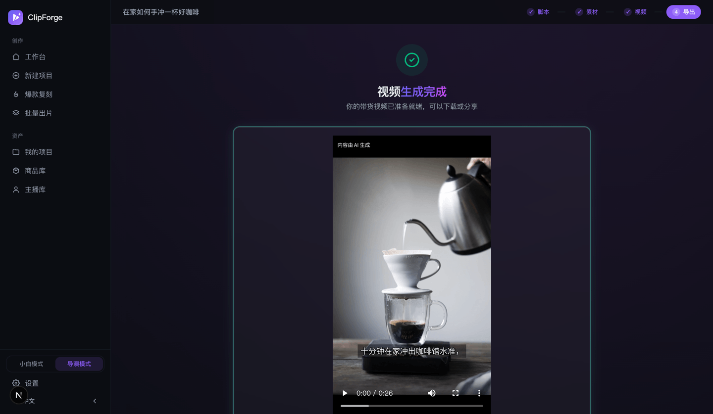

Đăng video AI tuân thủ: nhãn AIGC bật mặc định, không dính bẫy bóp tương tác
Nói ngắn gọn: video AI gắn nhãn AIGC đúng quy định nền tảng thuộc diện «được cho phép có điều kiện», rủi ro cao thật sự là cố ý gỡ bỏ hoặc che giấu nhãn. Các nền tảng Trung Quốc (Douyin / Kuaishou / Xiaohongshu) tự động bóp tương tác nội dung AI không gắn nhãn, và ép lượt hiển thị với từ cấm theo luật quảng cáo — vì vậy công cụ mã nguồn mở UGCBatch Studio làm tuân thủ theo kiểu bật sẵn mặc định, không cần cấu hình: video tự gắn nhãn AIGC ẩn trong metadata, mặc định in góc nhãn hiển thị «Tạo bằng AI», trước khi đăng tự kiểm tra rủi ro bóp tương tác và quét từ cấm, đưa cách sửa cho từng mục. Bài này giải thích tiêu chuẩn quốc gia GB 45438-2025 yêu cầu gì, lằn ranh đỏ của từng nền tảng ở đâu, và công cụ đã làm thay bạn những gì. Quy trình ra video đầy đủ xem Hướng dẫn sử dụng, agent tự động ra video xem MCP một câu ra video.
1. Kết luận: nội dung AI không phải không được đăng, mà là không được «đăng trần»
Coi «video AI = bị bóp tương tác» là chân lý là hiểu sai. Thái độ của các nền tảng Trung Quốc với nội dung do AI tạo là cho phép có điều kiện: gắn nhãn AIGC đúng quy định, bản thân nội dung không vi phạm thì được đề xuất bình thường; thứ thật sự bị xử lý là ba loại hành vi —
- Gỡ nhãn: cố ý gỡ bỏ, che giấu hoặc làm giả nhãn AIGC, đây là hành vi rủi ro cao mà cả pháp luật lẫn quy định nền tảng đều chỉ đích danh;
- Từ cấm theo luật quảng cáo: các cách nói như «giá thấp nhất», «hiệu quả tuyệt đối», video AI hay video người thật đều bị ép lượt hiển thị như nhau;
- Lằn ranh đỏ riêng của nền tảng: như hạn chế riêng của Douyin với nội dung đánh giá sản phẩm do AI tạo, ngành hàng đặc thù của người ảo, mã QR trong video dẫn ra ngoài nền tảng (xem mục 6).
Nói cách khác: nhãn là vé vào cửa, không phải điểm trừ. Dưới đây trước tiên xem tiêu chuẩn quốc gia về nhãn là gì.
2. Tiêu chuẩn quốc gia GB 45438-2025 yêu cầu gì: nhãn hai lớp hiển thị + ẩn
GB 45438-2025 «Công nghệ an ninh mạng — Phương pháp gắn nhãn nội dung tổng hợp do trí tuệ nhân tạo tạo ra» là tiêu chuẩn quốc gia đi kèm «Biện pháp gắn nhãn nội dung tổng hợp do trí tuệ nhân tạo tạo ra», có hiệu lực từ ngày 1 tháng 9 năm 2025. Với video do AI tạo, nó yêu cầu hai lớp nhãn cùng có mặt:
| Lớp | Cho ai xem | Hình thức |
|---|---|---|
| Nhãn hiển thị | Người xem nhìn / nghe thấy bằng mắt thường | Dòng chữ hoặc góc nhãn trên hình, như «Tạo bằng AI», «Nội dung do AI tạo», phải rõ ràng dễ nhận và hiển thị đủ lâu |
| Nhãn ẩn | Máy của nền tảng đọc | Thông tin thuộc tính tổng hợp ghi vào metadata tệp (nhãn tổng hợp, nhà cung cấp dịch vụ...), để nền tảng tự xác minh và truy xuất nguồn gốc |
Phía nền tảng (Douyin / Kuaishou / Xiaohongshu...) dựa vào đó yêu cầu người sáng tạo chủ động khai báo nội dung AI, và đọc máy để xác minh metadata — chỉ có góc nhãn trên hình mà không có metadata, hoặc chỉ có metadata mà không có góc nhãn, đều chưa tính là gắn đủ nhãn.
3. UGCBatch Studio làm gì theo mặc định: ra video là tuân thủ
Những việc này trong UGCBatch Studio không cần cấu hình, thực hiện mặc định:
- Tự gắn nhãn ẩn: metadata tệp của mỗi video tự được gắn nhãn AIGC ẩn — nhãn tổng hợp, nhà cung cấp dịch vụ, mã sản xuất nội dung, theo GB 45438-2025;
- Mặc định in góc nhãn hiển thị: góc nhãn «Nội dung do AI tạo» ở đầu video (góc trên bên trái, hiển thị ≥2 giây, đáp ứng quy định mới của Douyin 2026-07 — chỉ lồng tiếng AI cũng thuộc nội dung phải ghi chú). Có thể tắt thủ công, nhưng tắt thì cổng kiểm duyệt sẽ cảnh báo rõ rủi ro;
- Chuẩn bị sẵn văn bản khai báo: trang xuất kèm văn bản khai báo «Tạo bằng AI» sao chép một chạm, khi đăng dùng cùng mục khai báo «Nội dung AI» của nền tảng;
- Giữ nguyên ảnh gốc sản phẩm: image-to-image khóa bản thân sản phẩm, đổi nền, đánh sáng không làm sai lệch sản phẩm — tránh rủi ro tuân thủ và hậu mãi do «hàng không giống hình».

4. «Tự kiểm tra rủi ro bóp tương tác» trước khi đăng: kiểm tra từng mục, kèm cách sửa cụ thể
Nhãn chỉ giải quyết «có được đăng không», tự kiểm tra rủi ro bóp tương tác giải quyết «đăng rồi có ai xem không». Trước khi ra video rà lần lượt từng mục, mỗi mục cho ✓ / ⚠ / ✗ và cách sửa cụ thể (không cho điểm ảo mơ hồ):
| Mục kiểm tra | Kiểm tra gì | Không đạt thì sửa thế nào |
|---|---|---|
| Từ rủi ro theo luật quảng cáo | Cách nói vi phạm trong lời thoại và phụ đề | Tô sáng từng từ + gợi ý thay thế tuân thủ (xem mục sau) |
| Câu mở đầu | 3 giây đầu có câu giữ chân người xem không | Đưa hướng viết lại câu mở đầu, như đặt câu hỏi / tương phản / đưa kết quả lên trước |
| Vùng thời lượng lý tưởng | Có nằm trong khoảng nền tảng ưu ái tỉ lệ xem hết không | Gợi ý số giây mục tiêu cần cắt bớt hoặc bổ sung |
| Độ dễ đọc của phụ đề | Cỡ chữ / thời gian hiển thị / bị che | Chỉ ra phân cảnh cụ thể và tham số cần chỉnh |
| Kêu gọi hành động (CTA) | Cuối video có bước tiếp theo rõ ràng không | Bổ sung mẫu CTA tuân thủ như «bấm vào giỏ hàng vàng bên dưới» |
| Cấu trúc bán hàng ba phần | Tính hoàn chỉnh của cấu trúc câu mở đầu → điểm bán → hành động | Chỉ ra phần còn thiếu và cách bổ sung |
| Trạng thái nhãn AIGC | Góc nhãn hiển thị và metadata ẩn có đủ cả không | Một chạm khôi phục nhãn mặc định |
5. Quét từ cấm theo luật quảng cáo: bốn loại rủi ro, kèm gợi ý thay thế
Bốn loại từ rủi ro được tô sáng tức thì, mỗi chỗ kèm gợi ý viết lại tuân thủ:
- Từ ngữ tuyệt đối hóa (Điều 9 «Luật Quảng cáo»): «tốt nhất», «số một», «đỉnh cấp», cùng «giá thấp nhất», «rẻ nhất toàn mạng» và các tuyệt đối hóa về giá — đổi thành cách nói cụ thể kiểm chứng được, như «món mình mua lại nhiều nhất trong cùng dòng»;
- Y tế / công dụng sai sự thật: tuyên bố công dụng chưa được chứng minh kiểu «chữa tận gốc», «ba ngày thấy hiệu quả» — đổi thành mô tả trải nghiệm, không hứa hẹn kết quả;
- Tuyên bố cần chứng nhận: các cách nói cần hồ sơ chứng minh như «bằng sáng chế», «đạt giải», «kiểm định chứng nhận» — không đưa ra được thì xóa;
- Khẩn cấp giả: giới hạn thời gian, số lượng giả như «ngày cuối cùng», «sắp tăng giá» — đổi thành thông tin chương trình thật hoặc bỏ hẳn.
6. Lưu ý khác biệt giữa các nền tảng: ba lằn ranh đỏ riêng của Douyin
Quy định chi tiết về nội dung AI của mỗi nền tảng khác nhau, cổng kiểm duyệt của UGCBatch Studio đưa cảnh báo riêng theo nền tảng (mức warn, chỉ nhắc nhở, không cắt tính năng, có đăng hay không do bạn xác nhận):
- Hình thức đánh giá: phong cách đánh giá so sánh / mở hộp đánh giá thuộc «nội dung đánh giá do AI tạo» mà Douyin cấm — đăng Douyin nên chuyển sang người nói review hoặc tiểu phẩm tình huống, trên nền tảng khác phong cách này vẫn dùng bình thường;
- Năm ngành hàng người ảo: người ảo / nhân vật AI bị cấm ở y tế, tài chính, công dụng làm đẹp, công dụng chăm sóc sức khỏe, hiệu quả giáo dục đào tạo năm ngành hàng, tự cảnh báo trước theo văn bản sản phẩm; lời thoại nhân vật AI có tuyên bố kiểu «đã tự dùng thấy hiệu quả» cũng được nhắc — sát lằn ranh đỏ «làm giả hiệu quả sử dụng», kèm cách viết lại theo kiểu review;
- Mã QR dẫn ra ngoài nền tảng (rủi ro cao, mặc định tắt): từ Douyin 2026-07, mã QR trong video thuộc dẫn lưu lượng ra ngoài, vi phạm lần đầu đóng cửa hàng 7 ngày, lần hai thu hồi vĩnh viễn quyền bán hàng — quét mã mua hàng ở cuối video đối với Douyin mặc định từ chối (có thể ép bật, chỉ khuyên dùng cho phân phối kênh riêng), các nền tảng Trung Quốc khác kèm cảnh báo rủi ro, TikTok / Reels / Shorts không bị ảnh hưởng.
Điểm cộng: thuật toán đề xuất của Douyin ưu ái nội dung kết hợp AI + người thật (tỉ lệ quay thật ≥50% được ưu tiên lưu lượng). Trang tư liệu có thanh tỉ lệ quay thật / AI tính theo thời lượng và huy hiệu từng cảnh, cổng kiểm duyệt đồng thời cho biết trạng thái đạt chuẩn và gợi ý bổ sung cảnh quay thật — ảnh gốc sản phẩm, tư liệu tải lên, tư liệu từ kho quay thật miễn phí đều được tính là quay thật. Khi đăng TikTok / Reels / Shorts ra nước ngoài, kịch bản cũng kèm lưu ý tuân thủ nền tảng «gắn nhãn nội dung AI, tránh phóng đại và công dụng chưa chứng minh».
7. Miễn trừ và quy thuộc trách nhiệm
Cần nói rõ giới hạn: UGCBatch Studio làm «tuân thủ mặc định», không phải «bảo đảm tuân thủ». Điều công cụ đảm bảo được là — nhãn được gắn mặc định, rủi ro được nhắc mặc định, cách sửa được đưa rõ ràng; điều công cụ không đảm bảo được là — hiệu quả lưu lượng của bất kỳ nội dung nào, và cũng không công cụ nào có thể cam kết «không bị bóp tương tác». Quy định nền tảng luôn thay đổi (nội dung bài này tính đến 2026-08), trước khi đăng vui lòng theo quy định mới nhất của nền tảng, trách nhiệm đăng tải thuộc về người dùng. UGCBatch Studio mã nguồn mở (AGPL-3.0) miễn phí, 1184 unit test bảo vệ, mọi phán định của bộ quy tắc đều có thể kiểm chứng trong mã nguồn.
8. Câu hỏi thường gặp
Video AI có bị nền tảng bóp tương tác không?
Nội dung AI gắn nhãn đúng quy định thuộc diện cho phép có điều kiện, được đề xuất bình thường; rủi ro cao thật sự là cố ý gỡ nhãn, từ cấm theo luật quảng cáo và lằn ranh đỏ riêng của nền tảng (hình thức đánh giá / năm ngành hàng người ảo / mã QR dẫn lưu lượng). Không công cụ nào đảm bảo được việc không bị bóp tương tác — điều làm được là đừng thua vì vi phạm sơ đẳng.
GB 45438-2025 rốt cuộc yêu cầu gì?
Nhãn hai lớp: Nhãn hiển thị mà người xem thấy được (dòng chữ «Tạo bằng AI» trên hình) + Nhãn ẩn ghi vào metadata tệp (thuộc tính tổng hợp, nhà cung cấp dịch vụ...), có hiệu lực từ ngày 1 tháng 9 năm 2025, nền tảng dựa vào đó để đọc máy xác minh. Thiếu một lớp cũng không được.
UGCBatch Studio đã giúp tôi làm những gì?
Tự gắn nhãn ẩn trong metadata + mặc định in góc nhãn «Nội dung do AI tạo» ở đầu video + trang xuất sao chép một chạm văn bản khai báo; trước khi đăng tự kiểm tra rủi ro bóp tương tác và quét từ cấm theo luật quảng cáo, đưa cách sửa từng mục; ba lằn ranh đỏ riêng của Douyin kiểm soát mức warn, mã QR dẫn ra ngoài mặc định tắt. Tất cả bật mặc định, không cần cấu hình.
Ra video là tuân thủ, đăng không «trần trụi»
Nhãn AIGC · tự kiểm tra rủi ro bóp tương tác · quét từ cấm, bật hết mặc định, không cần cấu hình.